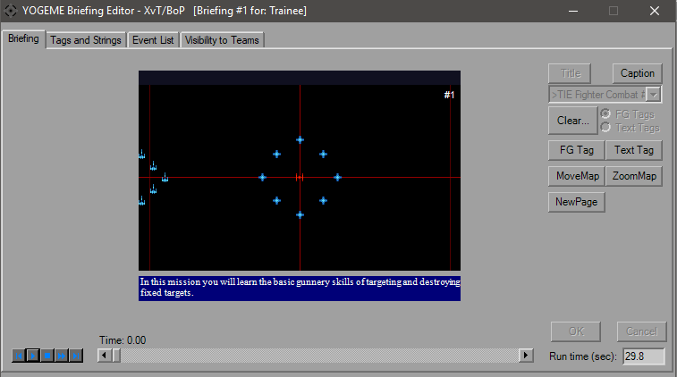

Briefing Dialog
Opening the Briefing Dialog will bring you to the main Briefing Animation tab.

This is the pre-mission briefing animation that plays before you fly. It animates at 20 fps, allows you to write on it, highlight FlightGroups, as well as moving and zooming the map. FlightGroups cannot actually be animated and change position on the map, as their locations and presence are defined in the FG itself
The XvT Briefing dialog behaves the same as TIE, although there is the cosmetic difference on the main display. All of the events behave exactly the same, and in fact the briefing can be converted from TIE to XvT and reversed simply from copy and pasting. The only real differences are that Unknown3 has been activated for XvT and there is a possibility of two extra events.
Available since v1.3 is the "Visible to Teams" tab, which is primarily for multiplayer purposes and allows for the editing of all 8 briefings.
Remaining information can be viewed on the TIE Briefing Dialog page.